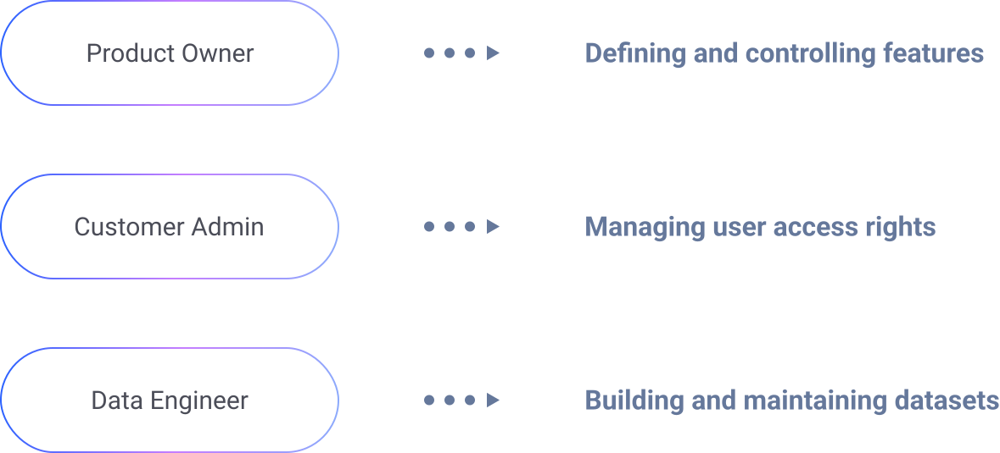

Beehive
The unified platform to manage and secure your data and applications.
In the spring of 2024, I joined PCCW Global’s Application Design team as a Product Design Intern. Over 12 weeks, I led the design of three core features supporting data management across multiple user roles. This experience strengthened my ability to work cross-functionally — collaborating closely with front-end designers, back-end engineers, and stakeholders — to ensure solutions were not only user-centered but also technically feasible and effectively delivered. The project pushed me to balance design quality, user needs, and implementation constraints, giving me valuable experience in driving features from conception to delivery.
While I cannot share project details due to NDA, I can describe my process. I start with research, including competitive analysis, to understand user needs. Then I move into ideation and design, making sure everything aligns with system standards. During implementation, I work with engineers to check feasibility and provide what they need. Finally, I refine and iterate until we reach a solution that balances user needs, technical constraints, and business goals.
I designed and implemented features tailored to the needs of three roles: Product Owner, Customer Admin, and Data Engineer. To capture user expectations, we met with role leaders from the client side to understand their goals. Based on those discussions and additional research, we developed strategies that balanced user needs with design feasibility, ensuring solutions that were both effective and aligned with the product vision.
- Collaborated cross-functionally with clients, designers, and engineers to align on solutions.
- Delivered features supporting multiple user roles within a unified system.
- Built familiarity with modern data management tools, gaining insight into how industry practices shape product design.